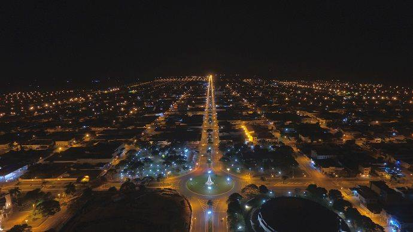
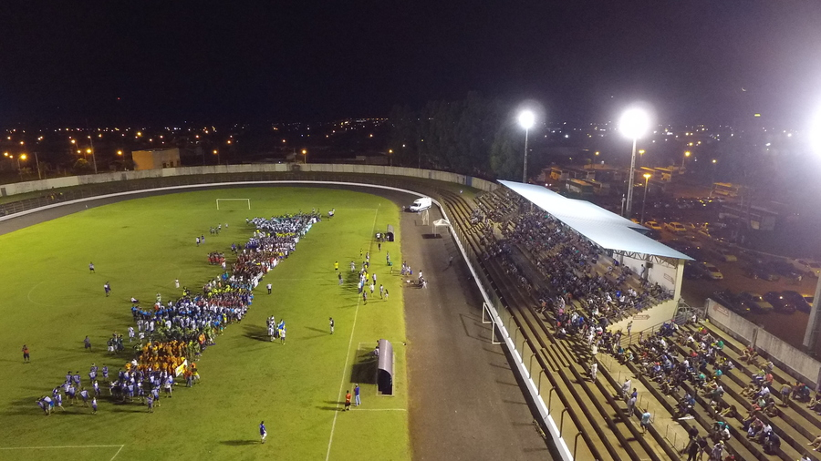
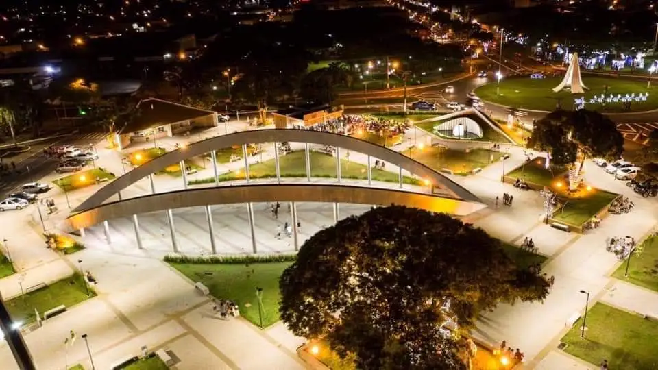
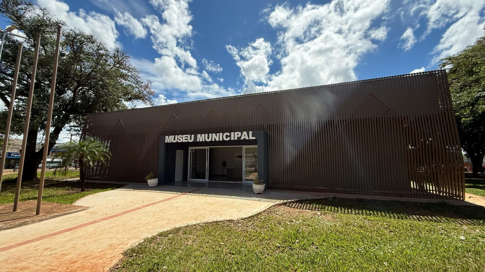
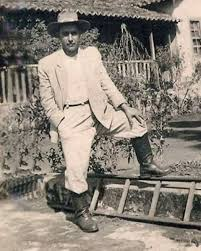
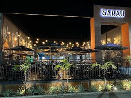
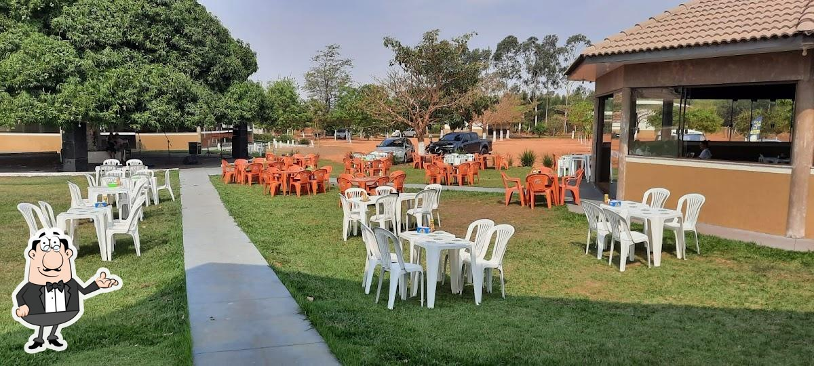
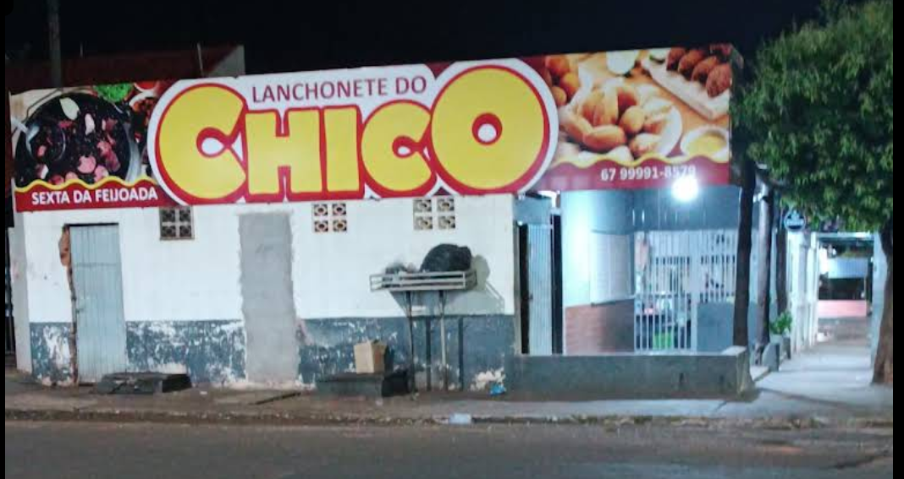

Nova Andradina foi fundada oficialmente em 20 de dezembro de 1958, durante o processo de colonização e expansão agrícola do sul de Mato Grosso do Sul. Conhecida como a “Capital do Vale do Ivinhema”, a cidade cresceu impulsionada pela agricultura e pela pecuária, atraindo famílias de várias regiões do Brasil em busca de novas oportunidades. Ao longo dos anos, Nova Andradina desenvolveu sua economia, infraestrutura e cultura, tornando-se um importante município da região, com destaque para a produção rural e o comércio local.
Links para mais Informações
Mais Fotos de Pontos Turisticos






